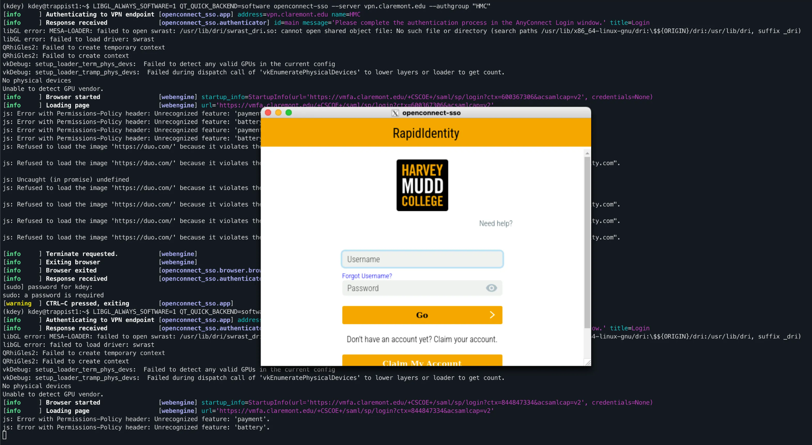
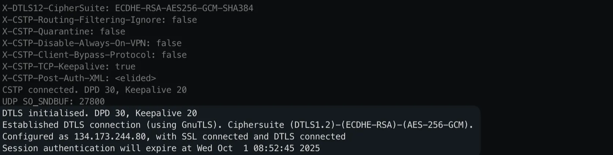
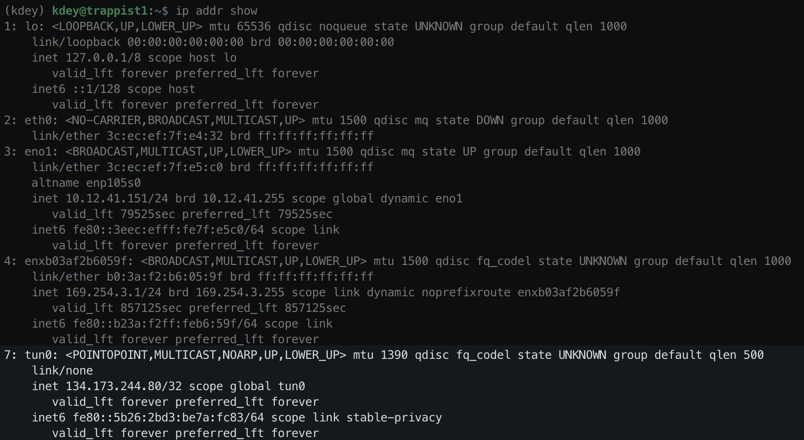
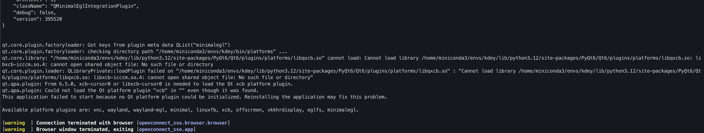

After you are added to Hopper, you should get email from CMC with a temporary password
SSH into hopper at hopper.mckenna.edu and change your password.
There are two folders you will need to use in hopper. Your user home folder at
/hopper/home/username and the lab group folder at
/hopper/groups/tamayolab/
Make a folder with the same name as your user name, eg /hopper/groups/tamayolab/kdey,
this is where you should store the files for your large computations (you can still put things in
your user home folder, but big projects should be in the lab one so other people can access it)
As of right now, hopper does not support conda so you need to use virtualenv. Make a new virtual environment:
python -m venv /path/to/new/virtual/environment
Activate the virtual environment with the following command:
source /path/to/new/virtual/environment/bin/activate
(eg python -m venv and then source venv/bin/activate)
Clone the newest version of the rebound GitHub repository, then cd into the folder
git clone https://github.com/hannorein/rebound.git
Next, set the AVX512 environment variable equal to 1, this tells rebound to compile with AVX512 instructions.
export AVX512=1
export OPT=-march=native
Finally build and install rebound
make clean
make
pip install -e .
in a new python file or terminal, run the following code
import rebound
sim = rebound.Simulation()
sim.add(m=1)
sim.add(a=1)
sim.integrator = "whfast512"
sim.save_to_file("test.bin", step=1000)
print(sim.particles[1].f, "should be 0.0")
sim.integrate(1000, exact_finish_time=False)
print(sim.particles[1].f, "should be 5.822...")
sa = rebound.Simulationarchive("test.bin")
print(sa[0].particles[1].x, "should be 1.0")
for i in range(len(sa)):
sim = sa[i]
sim.synchronize() # you must call this on each time step where you want positions!
print(sim.particles[1].x, "should be 0.562...")
If you get an error about the whfast512 integrator not being installed, delete the build folder inside the rebound folder and try installing again. If that still doesn’t work, talk to Dan.
Additional settings you should change on the whfast512 integrator are:
sim.ri_whfast512.safe_mode = False # combines symplectic correctors and drift steps at beginning and end of timesteps.
sim.ri_whfast512.keep_unsynchronized = True # allows for bit-by-bit reproducibility
sim.ri_whfast512.gr_potential = True # enables corrective general relativity force
sim.ri_whfast512.coordinates = "jacobi" # use jacobic coordinates to avoid democratic heliocentric underestimating instability rate. (arXiv:2601.08019)
These speed up the simulation, make sure it is reproducible on other computers, and enable a corrective force to account for general relativity.
Once you are ready to run long integrations, follow this tutorial on using SLURM, the workload manager to queue big jobs!
If you get an error when trying to use reboundx that it can’t find a .so file,
then you need to copy the corresponding file from where you downloaded + built rebound into
your virtual environment. Eg:
cp rebound/librebound.cpython-39-x86_64-linux-gnu.so .venv/lib64/python3.9/site-packages/
Note: an admin account is required to establish the VPN connection to hopper. Once it is setup anyone can use it for 30 hours until it is closed automatically.
Establishing a connection
First make sure you ssh with the-Y flag so that X11 apps can be forwarded to your
computer (you will also need to install XQuartz on a Mac or an equivalent in windows).
Then in a tmux or screen session, run this command
LIBGL_ALWAYS_SOFTWARE=1 QT_QUICK_BACKEND=software openconnect-sso --server vpn.claremont.edu --authgroup "HMC"
It will open in a new window on your computer where you can sign in with your HMC credentials:

When you are done logging in, the window will close and you will be asked to enter your password

After entering your password you should see a bunch of logs, ending with
Established DTSL connection and the date that the session authentication expires.
The VPN will create a new network interface (see the list with ip addr show )

This is the only one that can communicate with hopper, so if you try to ping
hopper.mckenna.edu it will not work since that uses the default enxb03af…
address.
Any programs that connect to hopper needs to explicitly specify that they want to use the
tun0 address.
Copying files to/from hopper
Run ip addr show as described above to find the ip address of the tunnel network device.
Then use rsync or your file copying command of choice to transfer the files. Using the
info from the image above, it would look like:
rsync --info=progress2 -avzh --ignore-existing --address=134.173.244.80 hopper.mckenna.edu:/path/to/files/on/hopper /path/where/you/want/the/files
Installing openconnect-sso on a new computer
This requires root permissions and should already be done on trappist1 and kepler11. If you have
trouble with openconnect-sso, talk to Dan.
In order to use openconnect-sso, we need to install the X11 windowing system and enable
X11 forwarding over ssh. Since our servers are headless and don’t have a desktop environment,
setting up X11 is a bit more complicated.
Then install the requirements for X11 forwarding and reboot the server.
sudo apt install xorg openbox
At this point, try running the following command. You should see a window on your computer pop up with a pair of eyes that follow your mouse.
xeyes
If that doesn’t work, check that you ssh’d with the correct -Y flag, that you have
XQuartz installed, and that the other installation commands work correctly. Errors can be caused by
a problem on the server, OR your computer not having the correct X11 display configuration.
Once that is working, move onto the next step.
Next, install openconnect and openconnect-sso:
sudo apt install openconnect
pip install 'openconnect-sso[full]' # in your python virtualenv
We know that X11 forwarding is already working, so now we need to install the
openconnect-sso dependencies. The easiest way to figure out what is missing is by
adding the following debug flag to the open connect command above
***QT_DEBUG_PLUGINS=1*** LIBGL_ALWAYS_SOFTWARE=1 QT_QUICK_BACKEND=software openconnect-sso --server vpn.claremont.edu --authgroup "HMC"
A bunch of stuff will print out, but what you care about is the part at the bottom referring to
missing .so files.

Continue installing dependencies until it stops throwing errors, and a HMC login window appears on
your screen. sudo apt-cache search can be useful for finding the packages corresponding
to missing libraries
I had to install the following packages, but it will probably vary by computer
sudo apt install libxcb-cursor0 libxkbcommon-x11-0 libxcb-icccm4 libxcb-keysyms1